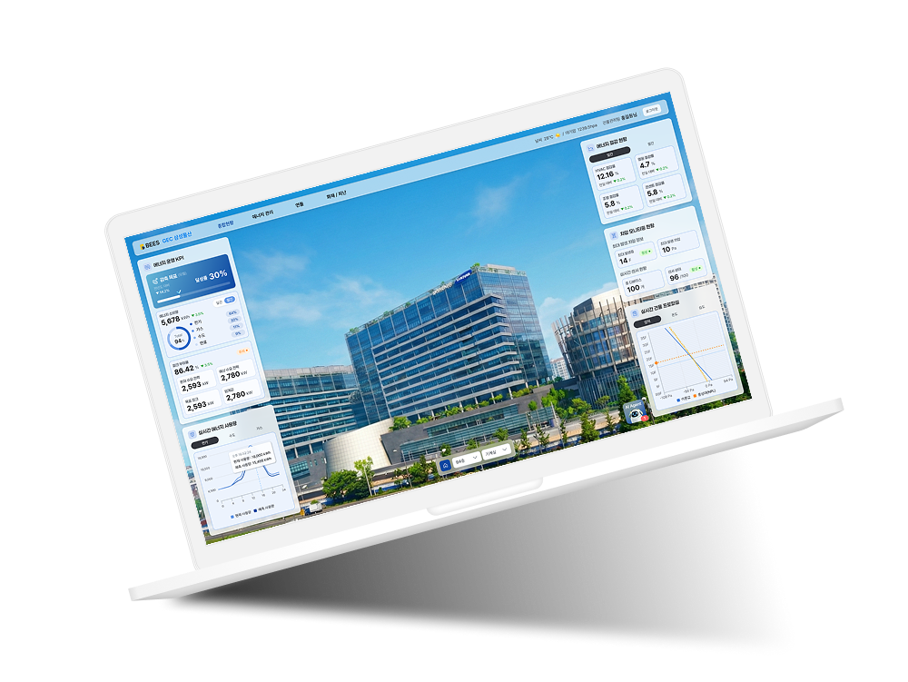
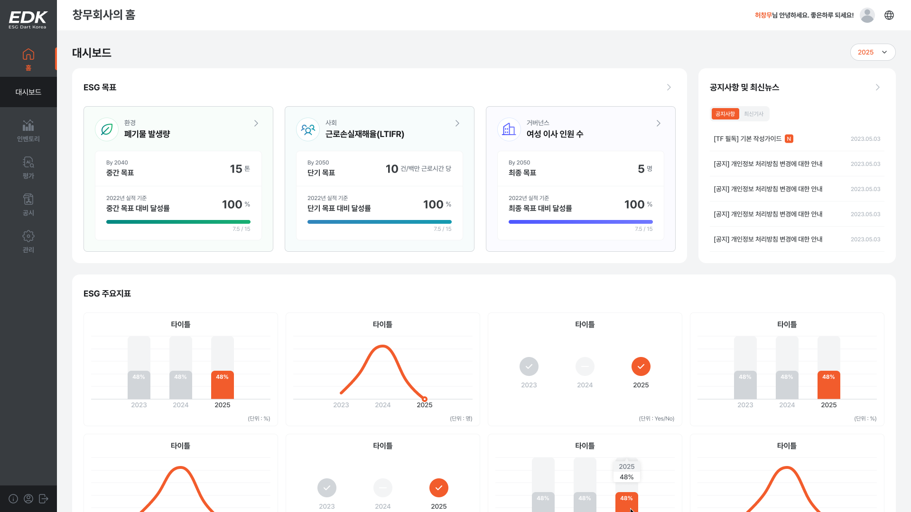

요구사항을 설계 단위로 나눠요.
기획서와 화면 정책을 기능·상태·예외 조건으로 나눠요. AI가 분류한 내용을 원문과 대조해 먼저 확인할 질문을 정리해요.
에이전시에서 시작했어요. 17개 웹사이트를 구축하며 다양한 요구사항을 화면 구조와 서비스 흐름으로 정리했어요.
인하우스 B2B SaaS에서는 UX 기획까지 맡았어요. 정보 구조와 화면 정책을 설계하고, 프론트엔드 엔지니어와 컴포넌트·상태·반응형 기준을 디자인 시스템으로 만들었어요.
지금은 SI 솔루션 업체에서 일해요. 여러 프로젝트의 복잡한 데이터와 업무 조건을 사용자가 이해하기 쉬운 정보와 행동 순서로 바꾸고 있어요.
AI는 제작과 검토 시간을 줄이는 데 활용해요. 이미지·아이콘 제작과 반복 작업에 적용하고, HTML 그래프를 Figma로 옮기는 플러그인도 만들어 화면과 흐름을 검토할 시간을 확보했어요.
요구사항을 나누고, 화면 차이를 비교하고, QA 항목을 정리해요. AI가 정리한 내용을 실제 화면과 대조하며 기준은 직접 세워요.
기획서와 화면 정책을 기능·상태·예외 조건으로 나눠요. AI가 분류한 내용을 원문과 대조해 먼저 확인할 질문을 정리해요.
권한·상태·컴포넌트 조건의 차이를 AI로 비교해요. 공통 패턴과 예외를 구분해 같은 화면을 반복하지 않아요.
화면 흐름과 버튼 문구의 대안을 함께 살펴봐요. 다음 행동이 분명한 방향을 골라 제품에 맞게 다듬어요.
반응형과 예외 상태를 AI로 먼저 정리해요. 실제 화면에서는 디자인 차이와 빠진 상태를 다시 확인해요.
발견한 문제를 조건·기대 동작·영향 화면으로 묶어요. 공통 컴포넌트와 개별 화면 중 수정 범위를 판단해 전달해요.
생각을 정리하고, 여러 방향을 비교하고, 작업의 기준을 공유할 때 사용해요.
문제와 조건을 정리하고, 실제 결과를 확인하며 다듬은 과정을 담았어요.

구매 전에 제품 규격과 설치 공간을 함께 비교하는 3D 서비스
#3DFitChecker#UI/UX#진행중
건물·층·설비의 에너지 데이터를 연결하는 관리 플랫폼
#DigitalTwin#UI/UX
ESG 데이터 수집부터 목표 관리와 보고서 작성까지
#ESGPlatform#B2BSaaS
서류 분석부터 사업장 자율점검까지 연결한 업무 흐름
#GovService#UI/UX
사용자 권한을 기준으로 인사·근태·결재를 연결한 플랫폼
#HRPlatform#RBAC